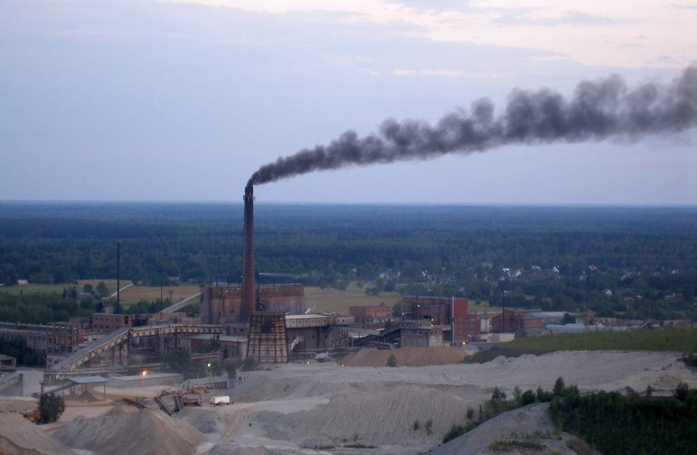

Globalization has had far-reaching effects on our lifestyle. It has led to faster access to technology, improved communication and innovation. Apart from playing an important role in bringing people of different cultures together, it has ushered a new era in the economic prosperity and has opened up vast channels of development. However, globalization has also created some areas of concern, and prominent among these is the impact that it has had on the environment. Globalization has featured extensively in the debates on environmentalism, and green activists have highlighted its far-reaching effects. Let us know about the impact of globalization on our environment.
Activists have pointed out that globalization has led to an increase in the consumption of products, which has impacted the ecological cycle. Increased consumption leads to an increase in the production of goods, which in turn puts stress on the environment. Globalization has also led to an increase in the transportation of raw materials and food from one place to another. Earlier, people used to consume locally-grown food, but with globalization, people consume products that have been developed in foreign countries. The amount of fuel that is consumed in transporting these products has led to an increase in the pollution levels in the environment. It has also led to several other environmental concerns such as noise pollution and landscape intrusion. Transportation has also put a strain on the non-renewable sources of energy, such as gasoline. The gases that are emitted from the aircraft have led to the depletion of the ozone layer apart from increasing the greenhouse effect. The industrial waste that is generated as a result of production has been laden on ships and dumped in oceans. This has killed many underwater organisms and has deposited many harmful chemicals in the ocean. The damage caused to ecosystem from the oil that spilled from one of the leaking containers of British Petroleum in 2010 is just one of the examples of the threat globalization poses to the environment.
Due to globalization and industrialization, various chemicals have been thrown into the soil which have resulted into the growth of many noxious weeds and plants. This toxic waste has caused a lot of damage to plants by interfering in their genetic makeup. It has put pressure on the available land resources. In various parts of the world, mountains are being cut to make way for a passing tunnel or a highway. Vast barren lands have been encroached upon to pave way for new buildings. While humans may rejoice on the glimmer with these innovations, these can have long-term effects on the environment. Various studies over the years, have found that plastic is one of the major toxic pollutants, as it is a non-biodegradable product. However, plastic is of immense use when it comes to packaging and preserving goods that are to be exported. This has led to increased use of plastic, causing widespread environmental pollution.
It has made so many changes in our lives that reversing it is not possible at all. The solution lies in developing effective mechanisms that can check the extent to which it can impact the environment. Researchers are of the view that the answer to this problem lies in the problem itself, that is, globalization itself can lend support to building a better structure which is economically feasible and environment-friendly. Globalization is about competition, and if certain privately owned companies can take the lead in being environment friendly, then it will encourage others to follow suit.

It is important that we put in some efforts to maintain harmony with the environment. The survival of human race on this planet is dependent on the environment to such a large extent that we cannot afford to ignore the consequences of our own actions. While there is a lot of debate and discussion on this issue, the need of the hour is to have effective policies in place, and implementation of those policies. The people that we have chosen to represent us have the responsibility of ensuring that the extent of damage on environment is curtailed, if not totally prevented. We hope this article helped you in understanding globalization and its impact on the environment and the importance of taking concrete actions against it.
Then what are you waiting for... Get registered and stay updated with us via emails
With Digitalisation comes lots of e-waste, help us to have Digitalised India, Yet Clean India.